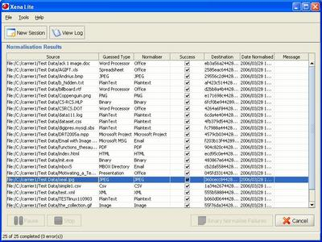
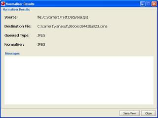
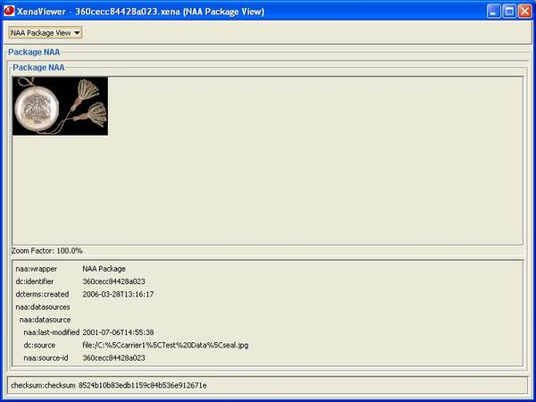
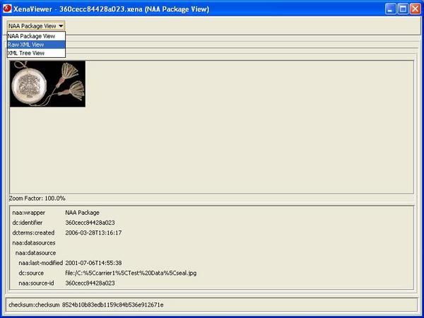
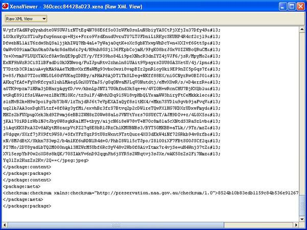
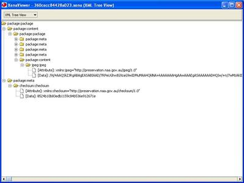

Once files have been normalised, the results may be checked via the Xena Lite viewer. Double click a file in the results table. The following example shows a jpeg image file selected.
Xena Lite displays some brief information about the selected file.
Click the Xena View button.
The Xena Lite viewer produces a presentation of the file (in this case an image) along with some metadata associated with the file and the file's checksum.
The view selector at the top of the viewer window may be used to select each of the views available for that file type. In this case they are Raw XML View.
...and XML Tree View.
Other file types may offer further viewing options. For example, the viewer may deliver Office document files with an option to open the file via OpenOffice.